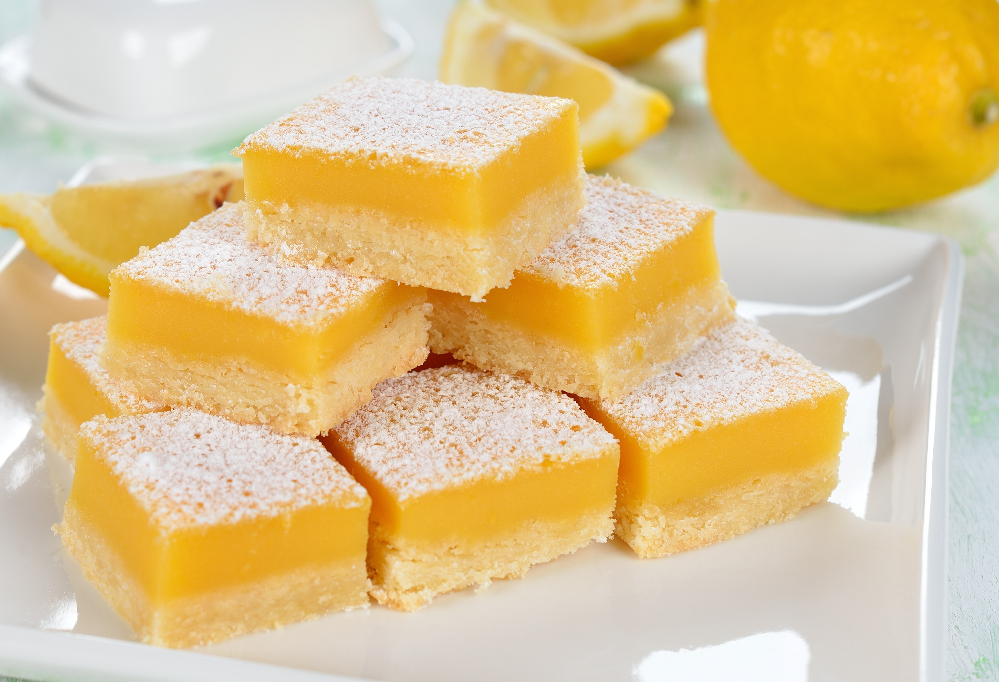

Lemon Squares
Back to Homepage

Lemon squares, also called lemon bars, is a delicious dessert. Below you will find a list of ingredients and a step-by-step guide.
The following recipe is directly from Preppy Kitchen, because in no way am I a baker. I simply code websites, and this is a TOP project. Here is a link to the recipe.
Ingredients
- butter
- eggs
- salt
- sugar
- powdered sugar
- lemons
You may be asking yourself, "What are the measurements and portions for this recipe?". Great question! I have no effing idea. This recipe does not have that info. Good luck.
Baking Equipment
- 9x13 inch baking dish
- parchment paper
How to Make Lemon Squares
- Set your oven to 350F. While the oven is preheating, line your baking dish with parchment paper. Add flour, salt, and powdered sugar to a bowl and whisk together.
- Melt your butter and pour it in. Perhaps add a teaspoon of vanilla. Do what your heart desires.
- Mix the batter with a spoon or spatula. Original recipe suggests crumbling the dough in your hands after it is mixed if you are doing this by hand.
- Evenly press the dough down with your fingers on your baking dish. Do not worry about the thickness.
- Bake for about 20 minutes or until the dough is light golden. This is kind of up to personal preference.
- Zest three lemons and mix it with sugar until fully incorporated. Sugar should be fragrant and light yellow when finished.
- Juice the lemons until you have a cup of lemon juice.
- Add the lemon sugar and half a cup of flour to a large bowl. Whisk together.
- Whisk in the eggs and lemon juice until fully incorporated.
- Pour the filling onto your dough base. Bake for about 25 minutes, rotating the pan halfway through.
- Let the squares cool for about an hour, then chill in the refridgerator for about two hours.
- Once chilled, remove from pan and peel away parchment paper. Dust the powdered sugar on top.
- Use a sharp and damp knife to cut the squares. For best results, re-dampen the knife after each cut. If you're gonna be extra like that.